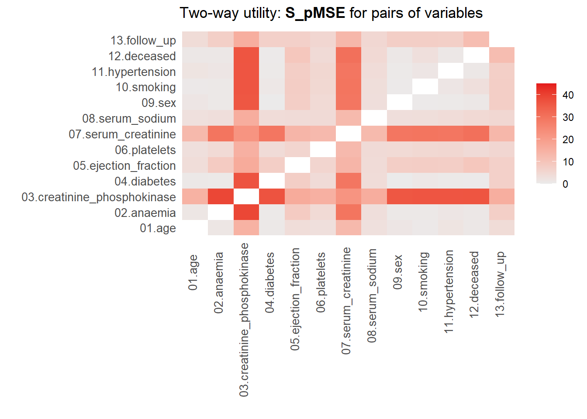
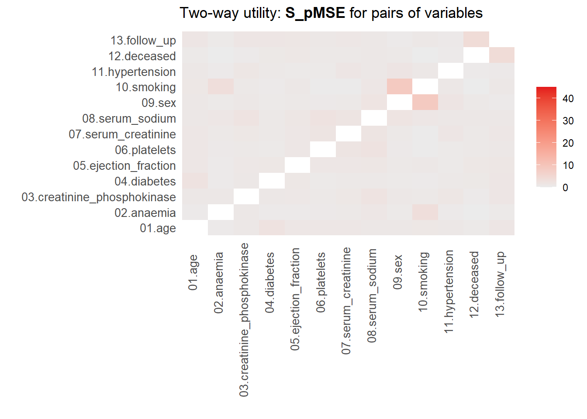
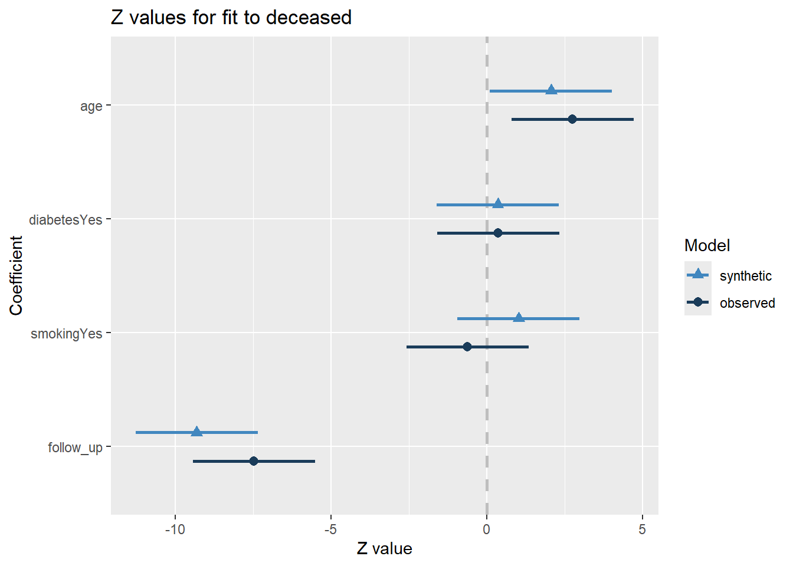
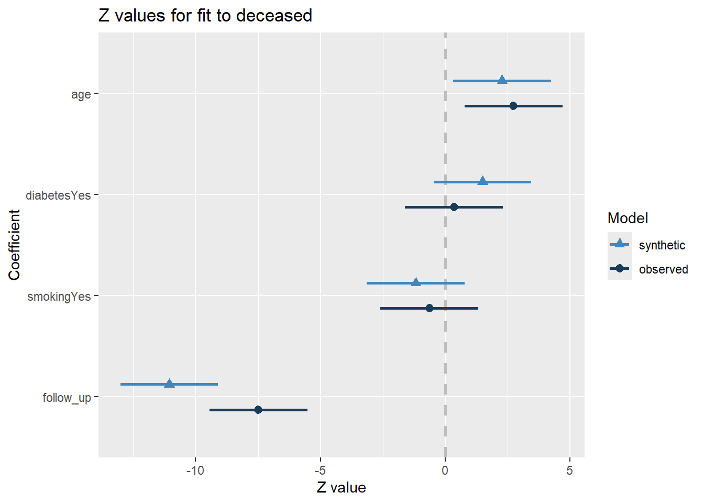

Practical 2: Evaluating utility and privacy of synthetic data
Fake it ’till you make it: Generating synthetic data with high utility in R
Author
Thom Volker & Erik-Jan van Kesteren
Note. This practical builds on Practical 1, and assumes you have completed all these exercises.
Synthetic data utility
The quality of synthetic data sets can be assessed on multiple levels and in multiple different ways (e.g., quantitatively, but also visually). Starting on a univariate level, the distributions of the synthetic data sets can be compared with the distribution of the observed data. For categorical variables, the observed counts in each category can be compared between the real and synthetic data. For continuous variables, the density of the real and synthetic data can be compared. Later on, we also look at the utility of the synthetic data on a multivariate level.
Univariate data utility
1. To get an idea of whether creating the synthetic data went accordingly, compare the first 10 rows of the original data with the first 10 rows of the synthetic data sets (inspect both the parametric and the non-parametric set). Do you notice any differences?
Hint: You can extract the synthetic data from the synthetic data object by called $syn on the particular object.
You might notice that some of the continuous variables are not rounded as in the original data when using parametric synthesis models. Additionally, there are negative values in the synthetic version of the variable creatinine_phosphokinase, while the original data is strictly positive.
Both of these issues are not present when using CART, because CART draws values from the observed data (and thus can’t create values that are not in the observed data).
Apart from inspecting the data itself, we can assess distributional similarity between the observed and synthetic data.
2. Compare the descriptive statistics from the synthetic data sets with the descriptive statistics from the observed data. What do you see?
Hint: Use the function describe() from the psych package to do this.
The descriptive statistics are not exactly similar, but come rather close in terms of mean and standard deviation. When looking at higher-order moments and the minimum and maximum, we see that there are some noticeable differences for parametrically synthesized data, but not so much for the non-parametrically synthesized data. We pay more attention to these issues when we visually inspect the synthetic data.
We will now visually compare the distributions of the observed and synthetic data, as this typically provides a more thorough understanding of the quality of the synthetic data.
3. Use compare() from the synthpop package to compare the distributions of the observed and parametric synthetic data set, set the parameter utility.stats = NULL. What do you see?
For now, ignore the table below the figures, we will come to this at a later point.
You might notice that there are substantial differences between the distributions of some of the continuous variables. Especially for the variables creatinine_phosphokinase, serum_creatinine and follow_up, the synthetic data does not seem to capture the distribution of the observed data well. Also for the other variables, there are some discrepancies between the marginal distributions of the observed and synthetic data.
Of course, this could have been expected, since some of the variables are highly skewed, while we impose a normal distribution on each variable with the current set of parametric models. It is quite likely that we could have done a better job by using more elaborate data manipulation (e.g., transforming variables such that there distribution corresponds more closely to a normal distribution (and back-transforming afterwards)).
For the categorical variables, we seem to be doing a decent job on the marginal levels, as there are only small differences between the observed and synthetic frequencies in each level.
4. Use compare() from the synthpop package to compare the distributions of the observed and non-parametric synthetic data set, set the parameter utility.stats = NULL. What do you see?
Again, ignore the table below the figures, we will come to this at a later point.
Using non-parametric synthesis models (i.e., CART), we do a much better job in recreating the shape of the original data. In fact, the marginal distributions are close to identical, including all irregularities in the original data.
There are also other, more formal, ways to assess the utility of the synthetic data, although there is some critique against these methods (see, e.g., Drechsler 2022). Here, we will discuss one of these measures, the \(pMSE\), but there are others (although utility measures tend to correlate strongly in general). The intuition behind the \(pMSE\) is to predict whether an observation is actually observed, or a synthetic record. If this is possible, the observed and synthetic data differ on at least one dimension, which allows to distinguish between the records.
Formally, the \(pMSE\) is defined as \[
pMSE = \frac{1}{n_{obs} + n_{syn}}
\Bigg(
\sum^{n_{obs}}_{i=1} \Big(\hat{\pi}_i - \frac{n_{obs}}{n_{obs} + n_{syn}}\Big)^2 +
\sum^{n_{obs} + n_{syn}}_{i={(n_{obs} + 1)}} \Big(\hat{\pi_i} - \frac{n_{syn}}{n_{obs} + n_{syn}}\Big)^2
\Bigg),
\] which, in our case, simplifies to \[
pMSE = \frac{1}{598}
\Bigg(
\sum^{n_{obs} + n_{syn}}_{i=1} \Big(\hat{\pi}_i - 0.5\Big)^2
\Bigg),
\] where \(n_{obs}\) and \(n_{syn}\) are the sample sizes of the observed and synthetic data, \(\hat{\pi}_i\) is the probability of belonging to the synthetic data.
5. Calculate the \(pMSE\) for the variable creatinine_phosphokinase for both synthetic sets and compare the values between both synthesis methods. Use a logistic regression model to create the probabilities \(\pi\). What do you see?
Hint: You can use the function utility.gen() and set the arguments method = "logit" (this denotes the model used to predict the probabilities), vars = "creatinine_phosphokinase" and maxorder = 0 (which denotes that we don’t want to specify interactions, as we only have a single variable here).
Show Code
utility.gen(syn_param, heart_failure, method ="logit", vars ="creatinine_phosphokinase",maxorder =0)utility.gen(syn_nonparam, heart_failure, method ="logit", vars ="creatinine_phosphokinase",maxorder =0)
Show Output
Utility score calculated by method: logit
Call:
utility.gen.synds(object = syn_param, data = heart_failure, method = "logit",
maxorder = 0, vars = "creatinine_phosphokinase")
Selected utility measures
pMSE S_pMSE
0.000487 2.328462
Utility score calculated by method: logit
Call:
utility.gen.synds(object = syn_nonparam, data = heart_failure,
method = "logit", maxorder = 0, vars = "creatinine_phosphokinase")
Selected utility measures
pMSE S_pMSE
0.000070 0.334188
The \(pMSE\) is about seven times higher for the parametrically synthesized data set.
It can be hard to interpret the values of the \(pMSE\), because they say little about how useful the synthetic data is in general. To get a more insightful measure, we can take ratio of the calculated \(pMSE\) over the expected \(pMSE\) under the null distribution of a correct synthesis model (i.e., in line with the data-generating model). The \(pMSE\) ratio is given by \[
\begin{aligned}
pMSE \text{ ratio } &=
\frac{pMSE}
{(k-1)(\frac{n_{\text{obs}}}{n_{\text{syn}} + n_{\text{obs}}})^2(\frac{n_{\text{syn}}}{n_{\text{syn}} + n_{\text{obs}}}) / (n_{\text{obs}} + n_{\text{syn}})} \\ &=
\frac{pMSE}{(k-1)(\frac{1}{2})^3/(n_{obs} + n_{syn})},
\end{aligned}
\] where \(k\) denotes the number of predictors in the propensity score model, including the intercept. Note that this formulation only holds for a \(pMSE\) that is obtained through logistic regression. When different methods are used to calculate the probabilities, the null distribution can be obtained by using a permutation test.
Ideally, the \(pMSE\) ratio equals \(1\), but according to the synthpop authors, values below \(3\) are indicative of high quality synthetic data, while values below \(10\) are deemed acceptable (Raab, Nowok, and Dibben 2021). This would indicate that both synthesis models are very good models to synthesize the variable creatinine_phosphokinase. However, our logistic regression model only evaluates whether the mean of the two variables is similar, and might thus not be the best model for evaluating the quality of the synthetic data in this case.
6. Recalculate the \(pMSE\) for the variable creatinine_phosphokinase for both synthetic sets, but this time using a CART model to estimate the probabilities \(\pi\). What do you see?
Hint: You can again use the function utility.gen() and set the arguments method = "cart" and vars = "creatinine_phosphokinase".
Show Code
utility.gen(syn_param, heart_failure, method ="cart", vars ="creatinine_phosphokinase")utility.gen(syn_nonparam, heart_failure, method ="cart", vars ="creatinine_phosphokinase")
Show Output
Running 50 permutations to get NULL utilities and printing every 10th.
synthesis 10 20 30 40 50
Utility score calculated by method: cart
Call:
utility.gen.synds(object = syn_param, data = heart_failure, method = "cart",
vars = "creatinine_phosphokinase")
Null utilities simulated from a permutation test with 50 replications.
Selected utility measures
pMSE S_pMSE
0.137999 4.822987
Running 50 permutations to get NULL utilities and printing every 10th.
synthesis 10 20 30 40 50
Utility score calculated by method: cart
Call:
utility.gen.synds(object = syn_nonparam, data = heart_failure,
method = "cart", vars = "creatinine_phosphokinase")
Null utilities simulated from a permutation test with 50 replications.
Selected utility measures
pMSE S_pMSE
0.021460 1.120306
The \(pMSE\)-ratio is about four times higher for the parametrically synthesized data set using the CART model to estimate the probabilities \(\pi\). This indicates that the nonparametric synthesis method is better at reproducing the variable creatinine_phosphokinase. However, both \(pMSE\)-ratio values are still well below \(10\), indicating reasonable synthetic data quality, where I would argue that the parametric synthetic version of creatinine_phosphokinase is a poor representation of the original data.
Multivariate data utility
Being able to reproduce the original univariate distributions is a good first step, but generally the goal of synthetic data reaches beyond that. Specifically, we often want to reproduce the relationships between the variables in the data. In the previous section, we saw that an evaluation of utility is often best carried out through visualizations. However, creating visualizations is cumbersome for multivariate relationships. Creating visualizations beyond bivariate relationships is often not feasible, whereas displaying all bivariate relationships in the data already results in \(p(p-1)/2\) different figures.
In the synthetic data literature, a distinction is often made between general and specific utility measures. General utility measures assess to what extent the relationships between combinations of variables (and potential interactions between them) are preserved in the synthetic data set. These measures are often for pairs of variables, or for all combinations of variables. Specific utility measures focus, as the name already suggests, on a specific analysis. This analysis is performed on the observed data and the synthetic data, and the similarity between inferences on these data sets is quantified.
General utility measures
Continuing with our \(pMSE\) approach, we can inspect which variables can predict whether observations are “true” or “synthetic” using the \(pMSE\)-ratio, similarly to what we just did using individual variables. We first try to predict the class of all observations by using all variables simultaneously, and hereafter we look at the results for all unique pairs of variables in the data.
7. Use the function utility.gen() from the synthpop package to calculate the \(pMSE\)-ratio using all variables for both synthetic sets. What do you see?
Utility score calculated by method: cart
Call:
utility.gen.synds(object = syn_param, data = heart_failure, print.flag = F)
Null utilities simulated from a permutation test with 50 replications.
Selected utility measures
pMSE S_pMSE
0.173414 3.237469
Utility score calculated by method: cart
Call:
utility.gen.synds(object = syn_nonparam, data = heart_failure,
print.flag = F)
Null utilities simulated from a permutation test with 50 replications.
Selected utility measures
pMSE S_pMSE
0.100042 1.953030
The CART model was somewhat better, but the difference is relatively small. To get more insight into which variables and bivariate relationships were synthesized accordingly, and which can be improved, we can use utility.tables.list().
8. Use the function utility.tables() from the synthpop package to calculate the \(pMSE\)-ratio for each pair of variables for both synthetic sets. What do you see?
Hint: To use the same color scale for both synthetic data sets, you can set the arguments min.scale = 0 and max.scale = 45.
Two-way utility: S_pMSE value plotted for 78 pairs of variables.
Variable combinations with worst 5 utility scores (S_pMSE):
02.anaemia:03.creatinine_phosphokinase
39.1081
03.creatinine_phosphokinase:04.diabetes
36.7613
03.creatinine_phosphokinase:12.deceased
36.5158
03.creatinine_phosphokinase:10.smoking
36.4113
03.creatinine_phosphokinase:11.hypertension
36.3940

Medians and maxima of selected utility measures for all tables compared
Medians Maxima
pMSE 0.0141 0.1110
S_pMSE 5.1911 39.1081
df 9.0000 24.0000
For more details of all scores use print.tabs = TRUE.
Two-way utility: S_pMSE value plotted for 78 pairs of variables.
Variable combinations with worst 5 utility scores (S_pMSE):
02.anaemia:09.sex
4.1218
06.platelets:09.sex
3.5183
02.anaemia:10.smoking
3.2361
03.creatinine_phosphokinase:08.serum_sodium
2.6997
05.ejection_fraction:13.follow_up
2.6599

Medians and maxima of selected utility measures for all tables compared
Medians Maxima
pMSE 0.0027 0.0135
S_pMSE 1.2914 4.1218
df 9.0000 24.0000
For more details of all scores use print.tabs = TRUE.
Here, we finally see that our parametric synthesis model is severely flawed. Quite some of the \(pMSE\) ratios are larger than 20, which means that we did in poor job in synthesizing these variables or the relationship of these variables with other variables. Note that we partly knew this already from our visualizations. Our non-parametric synthesis model is doing very good. The highest \(pMSE\)-ratio values are (much) smaller than \(10\), which actually indicates that our synthetic data are of high quality.
Specific utility measures
Specific utility measures assess whether the same analysis on the observed and the synthetic data gives similar results. Say that we are interested in, for instance, the relationship between whether a person survives, the age of this person, whether this person has diabetes and whether or not this person smokes, including the follow-up time as a control variable in the model.
9. Fit this model as a logistic regression model using glm.synds() with family = binomial and data = synthetic_data_object. Compare the results obtained with both synthetic data sets with the results obtained on the original data. What do you see?
Hint: You can also use compare.fit.synds() to compare the results of the models fitted on the synthetic data sets with the model fitted on the observed data.
Show Code
fit_param <-glm.synds(deceased ~ age + diabetes + smoking + follow_up,family = binomial, data = syn_param)fit_nonparam <-glm.synds(deceased ~ age + diabetes + smoking + follow_up,family = binomial, data = syn_nonparam)fit_obs <-glm(deceased ~ age + diabetes + smoking + follow_up,family = binomial, data = heart_failure)
Show Output
summary(fit_param)
Fit to synthetic data set with a single synthesis. Inference to coefficients
and standard errors that would be obtained from the original data.
Call:
glm.synds(formula = deceased ~ age + diabetes + smoking + follow_up,
family = binomial, data = syn_param)
Combined estimates:
xpct(Beta) xpct(se.Beta) xpct(z) Pr(>|xpct(z)|)
(Intercept) 0.203118 0.948495 0.2141 0.83043
age 0.027391 0.012734 2.1511 0.03147 *
diabetesYes 0.107183 0.339593 0.3156 0.75229
smokingYes 0.330859 0.343451 0.9633 0.33538
follow_up -0.024043 0.003265 -7.3638 1.788e-13 ***
---
Signif. codes: 0 '***' 0.001 '**' 0.01 '*' 0.05 '.' 0.1 ' ' 1
summary(fit_nonparam)
Fit to synthetic data set with a single synthesis. Inference to coefficients
and standard errors that would be obtained from the original data.
Call:
glm.synds(formula = deceased ~ age + diabetes + smoking + follow_up,
family = binomial, data = syn_nonparam)
Combined estimates:
xpct(Beta) xpct(se.Beta) xpct(z) Pr(>|xpct(z)|)
(Intercept) 0.2566964 0.9447743 0.2717 0.78585
age 0.0304290 0.0142923 2.1290 0.03325 *
diabetesYes 0.4642362 0.3400045 1.3654 0.17213
smokingYes -0.3846838 0.3597232 -1.0694 0.28489
follow_up -0.0285308 0.0034808 -8.1966 2.474e-16 ***
---
Signif. codes: 0 '***' 0.001 '**' 0.01 '*' 0.05 '.' 0.1 ' ' 1
summary(fit_obs)
Call:
glm(formula = deceased ~ age + diabetes + smoking + follow_up,
family = binomial, data = heart_failure)
Coefficients:
Estimate Std. Error z value Pr(>|z|)
(Intercept) -0.84667 0.90336 -0.937 0.34863
age 0.03651 0.01332 2.740 0.00614 **
diabetesYes 0.11021 0.31027 0.355 0.72242
smokingYes -0.20590 0.32636 -0.631 0.52811
follow_up -0.01932 0.00258 -7.486 7.08e-14 ***
---
Signif. codes: 0 '***' 0.001 '**' 0.01 '*' 0.05 '.' 0.1 ' ' 1
(Dispersion parameter for binomial family taken to be 1)
Null deviance: 375.35 on 298 degrees of freedom
Residual deviance: 270.87 on 294 degrees of freedom
AIC: 280.87
Number of Fisher Scoring iterations: 5
compare.fit.synds(fit_param, heart_failure)
Call used to fit models to the data:
glm.synds(formula = deceased ~ age + diabetes + smoking + follow_up,
family = binomial, data = syn_param)
Differences between results based on synthetic and observed data:
Synthetic Observed Diff Std. coef diff CI overlap
(Intercept) 0.20311831 -0.84666625 1.049784561 1.162090890 0.7035428
age 0.02739155 0.03650504 -0.009113495 -0.684058013 0.8254922
diabetesYes 0.10718298 0.11021309 -0.003030108 -0.009766139 0.9975086
smokingYes 0.33085915 -0.20589862 0.536757766 1.644690904 0.5804283
follow_up -0.02404289 -0.01931552 -0.004727370 -1.832233929 0.5325848
Measures for one synthesis and 5 coefficients
Mean confidence interval overlap: 0.7279113
Mean absolute std. coef diff: 1.066568
Mahalanobis distance ratio for lack-of-fit (target 1.0): 1.72
Lack-of-fit test: 8.576733; p-value 0.1272 for test that synthesis model is
compatible with a chi-squared test with 5 degrees of freedom.
Confidence interval plot:

compare.fit.synds(fit_nonparam, heart_failure)
Call used to fit models to the data:
glm.synds(formula = deceased ~ age + diabetes + smoking + follow_up,
family = binomial, data = syn_nonparam)
Differences between results based on synthetic and observed data:
Synthetic Observed Diff Std. coef diff CI overlap
(Intercept) 0.25669642 -0.84666625 1.103362666 1.2214008 0.68841244
age 0.03042904 0.03650504 -0.006076006 -0.4560644 0.88365490
diabetesYes 0.46423621 0.11021309 0.354023115 1.1410284 0.70891597
smokingYes -0.38468383 -0.20589862 -0.178785211 -0.5478196 0.86024754
follow_up -0.02853082 -0.01931552 -0.009215308 -3.5716685 0.08884333
Measures for one synthesis and 5 coefficients
Mean confidence interval overlap: 0.6460148
Mean absolute std. coef diff: 1.387596
Mahalanobis distance ratio for lack-of-fit (target 1.0): 3.01
Lack-of-fit test: 15.05894; p-value 0.0101 for test that synthesis model is
compatible with a chi-squared test with 5 degrees of freedom.
Confidence interval plot:

The results obtained for both synthetic data sets are quite similar, but the parametrically synthesized data are somewhat closer to the results from the analysis on the real data than the non-parametrically synthesized data. This is quite paradoxical, as we saw before that the non-parametric synthesis model yielded much more realistic data than the parametric synthesis model. This shows an important mismatch between general and specific utility. That is, to obtain high specific utility, it is not necessary to have high general utility. Moreover, high general utility does not guarantee high specific utility. Additionally, these results show that synthetic data with lower general utility can still be very useful if the goal is to perform specific analyses.
Statistical disclosure control
Synthetic data can provide a relatively safe framework for sharing data. However, some risks will remain present, and it is important to evaluate these risks. For example, it can be the case that the synthesis models were so complex that the synthetic records are very similar or even identical to the original records, which can lead to privacy breaches.
Privacy of synthetic data
Synthetic data by itself does not provide any formal privacy guarantees. These guarantees can be incorporated, for example by using differentially private synthesis methods. However, these methods are not yet widely available in R. If privacy is not built-in by design, it remains important to inspect the synthetic data for potential risks. Especially if you’re not entirely sure, it is better to stay at the safe side: use relatively simple, parametric models, check for outliers, and potentially add additional noise to the synthetic data. See also Chapter 4 in the book Synthetic Data for Official Statistics.
10. Call the function replicated.uniques() on the synthetic data. This function checks whether there are duplicates of observations that were unique in the original data.
None of observations occur repeatedly, so we have not accidentally copied any of the “true” observations into the synthetic sets. This provides some safeguard against accidentally releasing sensitive information. However, if the data contains really sensitive information, this might not be enough, and one could for example check whether the synthetic data differs from the observed data along multiple dimensions (i.e., variables). Such additional checks depend on the problem at hand. Additionally, one might want to take additional measures against accidentally disclosing information about observations, for example by drawing some of the variables from a parametric distribution. Even before distribution synthetic data, think wisely about whether there may remain any disclosure risks with respect to the data that will be distributed.
If you find the synthetic data too risky to be released as is, you can impose additional statistical disclosure limitation techniques, that additionally reduce the information in the synthetic data. For example, you can add noise to the synthetic data by using smoothing, or you can impose additional top/bottom coding, such that extreme values cannot appear in the synthetic data. This is easily done using the function sdc() as implemented in synthpop. Which statistical disclosure techniques to apply typically depends on the problem at hand, the sensitivity of the data and the synthesis strategies used. For example, for our non-parametric synthesis strategy, we re-use observed values, which might lead to an unacceptable risk of disclosure. Then, we could apply smoothing to the synthetic data to reduce the risk of disclosure.
Inferences from synthetic data
Lastly, when you have obtained a synthetic data set and want to make inferences from this set, you have to be careful, because generating synthetic data adds variance to the already present sampling variance that you take into account when evaluating hypotheses. Specifically, if you want to make inferences with respect to the sample of original observations, you can use unaltered analysis techniques and corresponding, conventional standard errors.
However, if you want to inferences with respect to the population the sample is taken from, you will have to adjust the standard errors, to account for the fact that the synthesis procedure adds additional variance. The amount of variance that is added, depends on the number of synthetic data sets that are generated. Intuitively, when generating multiple synthetic data sets, the additional random noise that is induced by the synthesis cancels out, making the parameter estimates more stable.
There are two ways to obtain statistically valid results from synthetic data. The first requires that you have multiple synthetic data sets, and estimates the variance between the obtained estimates in each of the synthetic data sets. The corresponding pooling rules are presented in Reiter (2003). For scalar \(Q\), with \(q^{(i)}\) and \(u^{(i)}\) the point estimate and the corresponding variance estimate in synthetic data set \(D^{(i)}\) for \(i = 1, \dots, m\), the following quantities are needed for inferences:
The analyst can use \(\bar{q}_m\) to estimate \(Q\) and \[
T_p = \frac{b_m}{m} + \bar{u}_m
\] to estimate the variance of \(\bar{q}_m\). Then, \(\frac{b_m}{m}\) is the correction factor for the additional variance due to using a finite number of imputations.
The second way to obtain statistically valid results from synthetic data allows for multiple synthetic data sets, but does not require it (Raab, Nowok, and Dibben 2016). In this case, the between-imputation variance is estimated from the standard error(s) of the estimates, which simplifies the total variance of each estimate to \[
T_s = \frac{\bar{u}_m}{m} + \bar{u}_m.
\] When you have \(m = 1\) synthetic data set, we have \(T_s = 2u\), where \(u\) is the variance estimate obtained in that synthetic set.
References
Drechsler, Jörg. 2022. “Challenges in Measuring Utility for Fully Synthetic Data.” In Privacy in Statistical Databases, edited by Josep Domingo-Ferrer and Maryline Laurent, 220–33. Cham: Springer International Publishing. https://doi.org/10.1007/978-3-031-13945-1_16.
Raab, Gillian M, Beata Nowok, and Chris Dibben. 2016. “Practical Data Synthesis for Large Samples.”Journal of Privacy and Confidentiality 7 (3): 67–97.
———. 2021. “Assessing, Visualizing and Improving the Utility of Synthetic Data.”arXiv Preprint arXiv:2109.12717.
Reiter, Jerome P. 2003. “Inference for Partially Synthetic, Public Use Microdata Sets.”Survey Methodology 29 (2): 181–88.